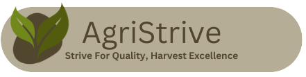

Hello! Welcome to Agristive! The best app for all your agricultural needs! Here at Agristrive, we support all types of farms, from Plantations all the way to home gardens.
Agristrive is the perfect app for all kinds of farmers, whether its your first time ever planting, or your using this app to manage your multi-million dollar plantation. The team here at Agristrive headquarters (aka our highschool), always puts farmers first. The app has the ability to give you information on exactly how to grow your plant, from how much sun exposure it needs to how often it needs watered and what kind of fertilizers should be used.